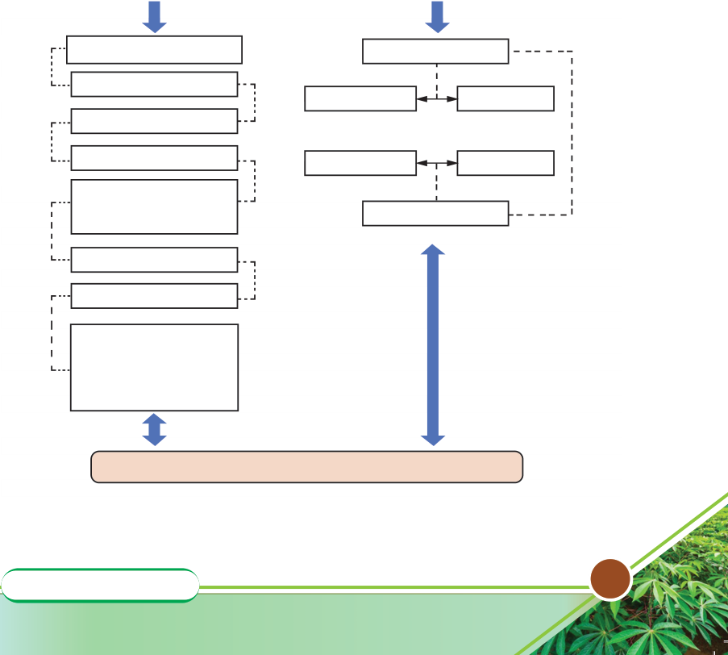

Agriculture for Secondary Schools
production. The planning process needs to take this into consideration and set
control measures to reduce the negative impacts. The measures can include:
(a) Using drought-tolerant forage varieties;
(b) Implementing water management strategies (irrigation and water
conservation measures);
(c) Implementing forage conservation measures; and
(d) Selecting more tolerable animal breeds.
In addition, farm record-keeping should be taken into consideration at each
stage of crop production. Figure 6.2 summarises some factors to consider when
planning for a livestock enterprise.
Planning for livestock enterprises
Physical
factors
Financial
factors
Suitable livestock type
Production costs
Suitable breed
Variable costs
Fixed costs
Suitable system
Suitable housing
Yields
Prices
Control of diseases
and parasites
Revenue
Proper feeding
Proper breeding
Proper harvesting,
handling, processing
& marketing of
produce/product(s)
Profitable livestock rnterprises
Figure 6.2: Factors to consider when planning for a livestock enterprise
89
Student’s Book Form Two